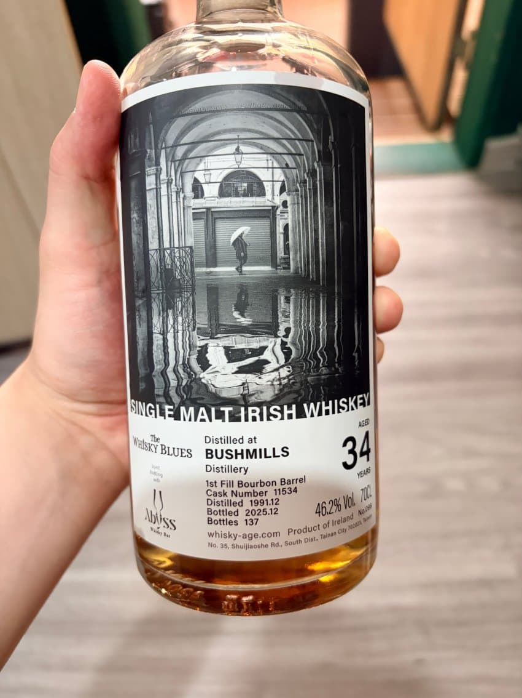
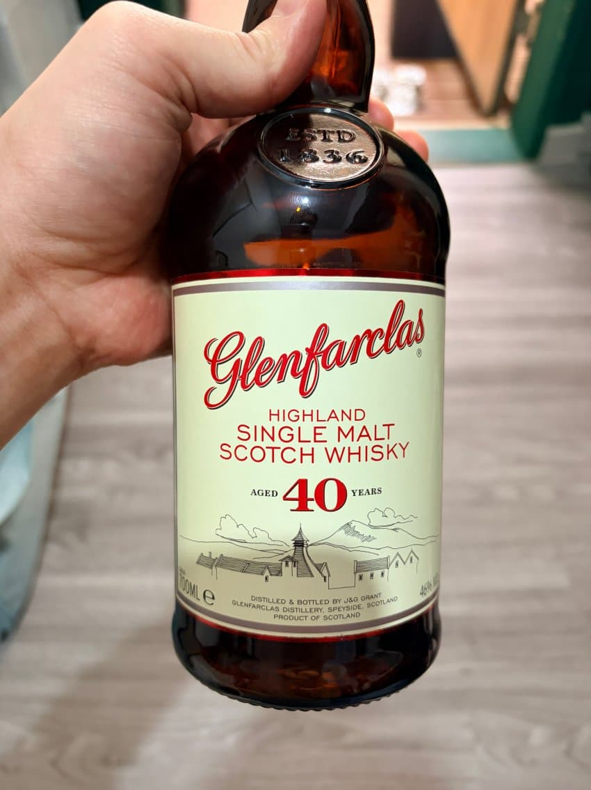

이번비욥 1등
89-91 싱글몰트 부시밀은 뭔가 있다
트로피컬함이 싱그러우면서도 달콤함으로 입안을 가득 채운다
91점

이번비욥 재발견
오피셜 파클에 주인분이 여리여리하다해서 기대치를 엄청 낮춘상태에서 시음했지만 이런 아주 좋은 위스키였다
올드셰리에서 느낄수있는 묵직한 란시오가 매력적이었다
90에서 91까지도 줄 수 있을듯

하지만 아무리 비싼 근스키라도 고기와 함께 맛있게 먹을 수 있는가?
아니.
결국 쌀술앞에선 다 범부일뿐이었다.
히란 아베 존나 맛있었다
넵.
댓글 11개